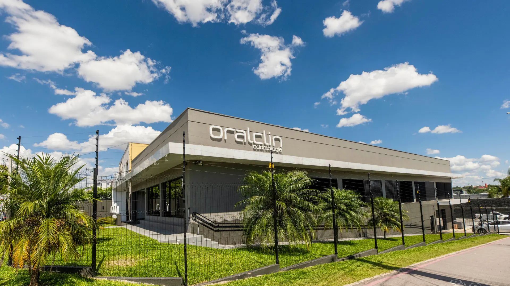
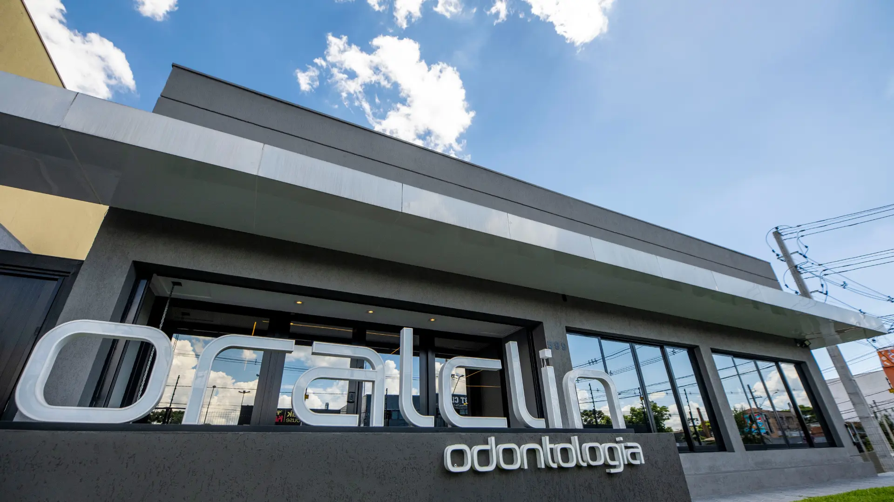
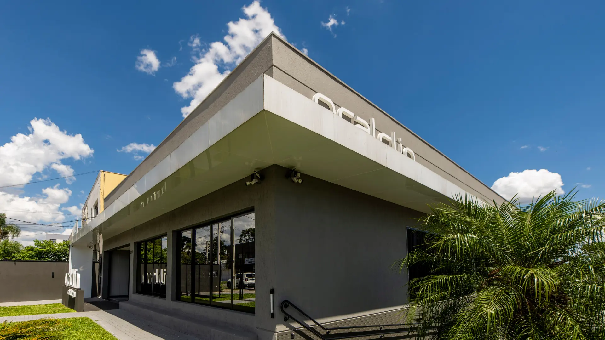

“Experiência tranquila e agradável para as crianças.”Sobre o atendimento infantil na Oralclin
Cuide da sua saúde bucal com os melhores profissionais e os mais modernos equipamentos.
Odontologia integrada no Seminário, Curitiba. Na Oralclin, o atendimento reúne cuidados, atenção e equipamentos modernos em um novo consultório.
4,9/5,0
Nota média publicada em avaliações de pacientes da Oralclin.

Um cuidado pensado para cada fase da vida.
Da primeira infância à melhor idade, a jornada começa pela confiança, não pelo procedimento.
“Tratamentos personalizados para idosos.”Sobre o cuidado com a terceira idade na Oralclin
“Atendimento impecável, repleto de cuidados e atenção.”Promessa publicada pela Oralclin
“Atendimento particular e convênios.”Sobre as formas de atendimento na Oralclin
Odontologia integrada, em um só lugar.
Um percurso claro pelas formas de atendimento publicadas pela Oralclin.
Odontologia integrada
Uma proposta de cuidado integrado em um único consultório.
Atendimento infantil
Uma experiência tranquila e agradável para as crianças.
Tratamentos para idosos
Cuidado personalizado para a saúde bucal na terceira idade.
Tratamentos personalizados
Tratamentos personalizados, conforme publicado pela Oralclin.
Particular e convênios
Alternativas de atendimento particular e por convênio, sob consulta.
Conheça o novo consultório.
Imagens oficiais apresentam o novo espaço e a presença dos equipamentos modernos publicada pela clínica.


Um espaço, dois cuidados.
Atendimento infantil e tratamentos para idosos aparecem juntos na proposta de odontologia integrada.
O que dizem os pacientes.
4,9/5,0
Nota média publicada em avaliações de pacientes.
A nota publicada funciona como um ponto de confiança conciso, sem transformar a página em uma sequência extensa de depoimentos.
Consultar o site oficialPlaneje sua visita.
Um único caminho, do primeiro contato até a cadeira do consultório.
Endereço
Av. N. Sra. Aparecida, 599 – SeminárioCuritiba – PR, CEP 80440-000, Brasil
Atendimento em dias úteis. Confirme o horário ao agendar.